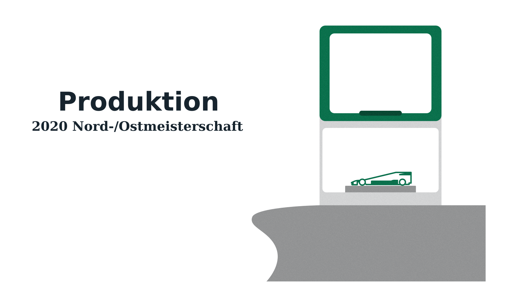

Auf dem Monitor sieht unser Auto ja schon ganz schick aus, jetzt muss es nur noch in echt auch schön aussehen! Dazu muss unser Chassis gefräst werden. In der ersten Runde übernahm dies Nordmetall mit dem Mobilen Kompetenzzentrum. Dafür noch einmal vielen Dank! Für weitere Wettbewerbe unterstützt uns mit dem Fräsen des Chassis das IWT an der Universität Bremen. Unsere Flügelelemente werden vom School_Lab_Bremen 3D-gedruckt. Auch dafür noch einmal herzlichen Dank!
Beim Fräsen unserer Chassis gab es soweit keine Probleme. Nur unsere Datei war bis einen Tag vor dem Frästermin nicht zum Fräsen geeignet. Ein kurzer Anruf bei unserem CAD-Ingenieur Jannik genügte, um unseren Unterboden entfernen und unsere Datei somit zum Fräsen geeignet machen zu lassen. Unser G-Code besteht aus etwa 7500 Punkten, sie wurden alle vor Ort in der Schule erstellt. Laut den zwei freundlichen Nordmetall-Mitarbeitern entsprach dies der "mittleren Preisklasse". Daraus folgt, dass es auf einer 3-Achs-Fräse etwa 15 Minuten dauerte, eine Chassishälfte zu fräsen. Das Wort "Hälfte" bedeutet in diesem Zusammenhang, dass von zwei Seiten gefräst wurde: jeweils der Seite, die am Ende den linken und auf der anderen Seite den rechten Seitenkasten beinhaltet. Zwischen den Fräsvorgängen wurde der G-Code auf den Steuerungsrechnern manuell gewechselt und die Rohlinge händisch in der Fassung innerhalb der Fräse umgedreht. Mit der Fertigungsqualität sind wir sehr zufrieden. Nun müssen wir nur noch Räder bestellen, Achsen und Lagerteile sind bereits in der Schule eingetroffen. Etwas anders lief es jedoch mit unseren Flügelteilen. Irgendwo zwischen unseren Rechnern und der Drucksoftware trat ein Fehler auf, der die Bauteile sehr extrem verkleinerte. Laut Berichten war es ein "Pixelteil"... Trotz Vergrößerung ist es momentan zu klein, um an unsere Autos montiert zu werden. Also müssen wir nächste Woche erneut ins School_Lab fahren, um die Teile abzuholen... Wie gut, dass Bremen eine Fahrradstadt ist und wir nur etwa 15 Minuten radeln müssen, um dort hinzukommen...